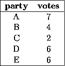

| Block Voting |
Different types of electoral systems exist. In a block voting system the members of a party do not vote individually as they like, but instead they must collectively accept or reject a proposal. Although a party with many votes clearly has more power than a party with few votes, the votes of a small party can nevertheless be crucial when they are needed to obtain a majority. Consider for example the following five-party system:

Coalition {A,B} has 7 + 4 = 11 votes, which is not a majority. When party C joins coalition {A,B}, however, {A,B,C} becomes a winning coalition with 7+4+2 = 13 votes. So even though C is a small party, it can play an important role.
As a measure of a party's power in a block voting system, John F. Banzhaf III proposed to use the power index. The key idea is that a party's power is determined by the number of minority coalitions that it can join and turn into a (winning) majority coalition. Note that the empty coalition is also a minority coalition and that a coalition only forms a majority when it has more than half of the total number of votes. In the example just given, a majority coalition must have at least 13 votes.
In an ideal system, a party's power index is proportional to the number of members of that party.
Your task is to write a program that, given an input as shown above, computes for each party its power index.
The first line contains a single integer which equals the number of test cases that follow. Each of the following lines contains one test case.
The first number on a line contains an integer P in [1 20] which equals the number of parties for that test case. This integer is followed by P positive integers, separated by spaces. Each of these integers represents the number of members of a party in the electoral system. The i-th number represents party number i. No electoral system has more than 1000 votes.
For each test case, you must generate P lines of output, followed by one empty line. P is the number of parties for the test case in question. The i-th line (i in [ ]) contains the sentence:
party i has power index I
where I is the power index of party i.
3 5 7 4 2 6 6 6 12 9 7 3 1 1 3 2 1 1
party 1 has power index 10 party 2 has power index 2 party 3 has power index 2 party 4 has power index 6 party 5 has power index 6 party 1 has power index 18 party 2 has power index 14 party 3 has power index 14 party 4 has power index 2 party 5 has power index 2 party 6 has power index 2 party 1 has power index 3 party 2 has power index 1 party 3 has power index 1